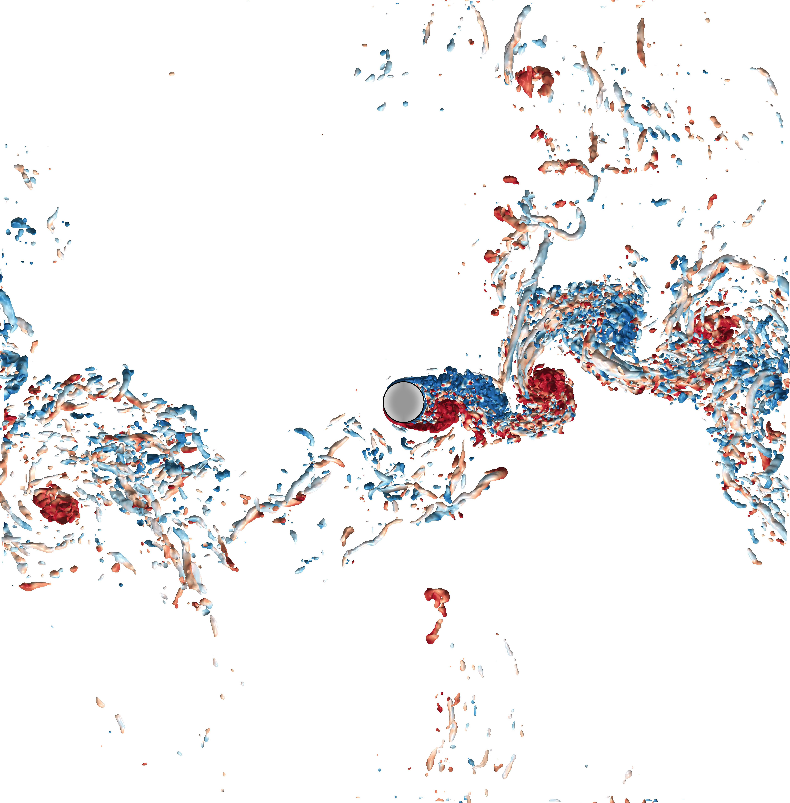

"Wir müssen wissen, wir werden wissen."
Foucusing on fundamental mathematical physics
Laminar-turbulent Transition
Exploring the underlying physical mechanism (in classic flow types, e.g. pipe
flow, PPF, and PCF) with dynamic system approach, brute-force DNS, experimental data, and machine
learning tools.
Establishing fist-principles theoretical model to provide profound
comprehension and predictive insights.
Forecast for Complex Systems
Utilizing physical-informed machine learning tools to forecast behaviors of complex systems, and interpreting forecast performance by dynamic system approac and DNS.
* represents the corresponding author.